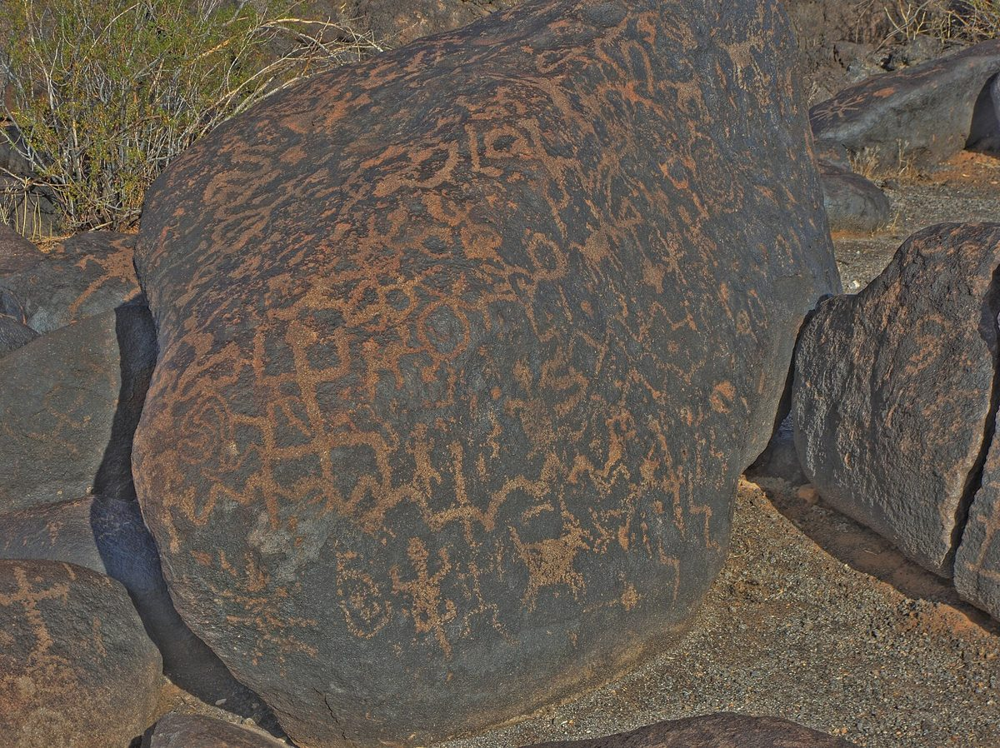

🏺Painted Rock petroglyphs
Two small hills of dark boulders, covered with hundreds of carvings that are sacred to many tribes. The travelers' trail ran past: the Anza expedition in 1775, and the Butterfield stage from 1858, which took 25 days from St. Louis to San Francisco.
A short gravel path around the hills; do not climb the rocks. 11 paved miles off I-8, then half a mile of dirt; stay away after heavy rain. No water and little phone signal. Day-use fee not confirmed.